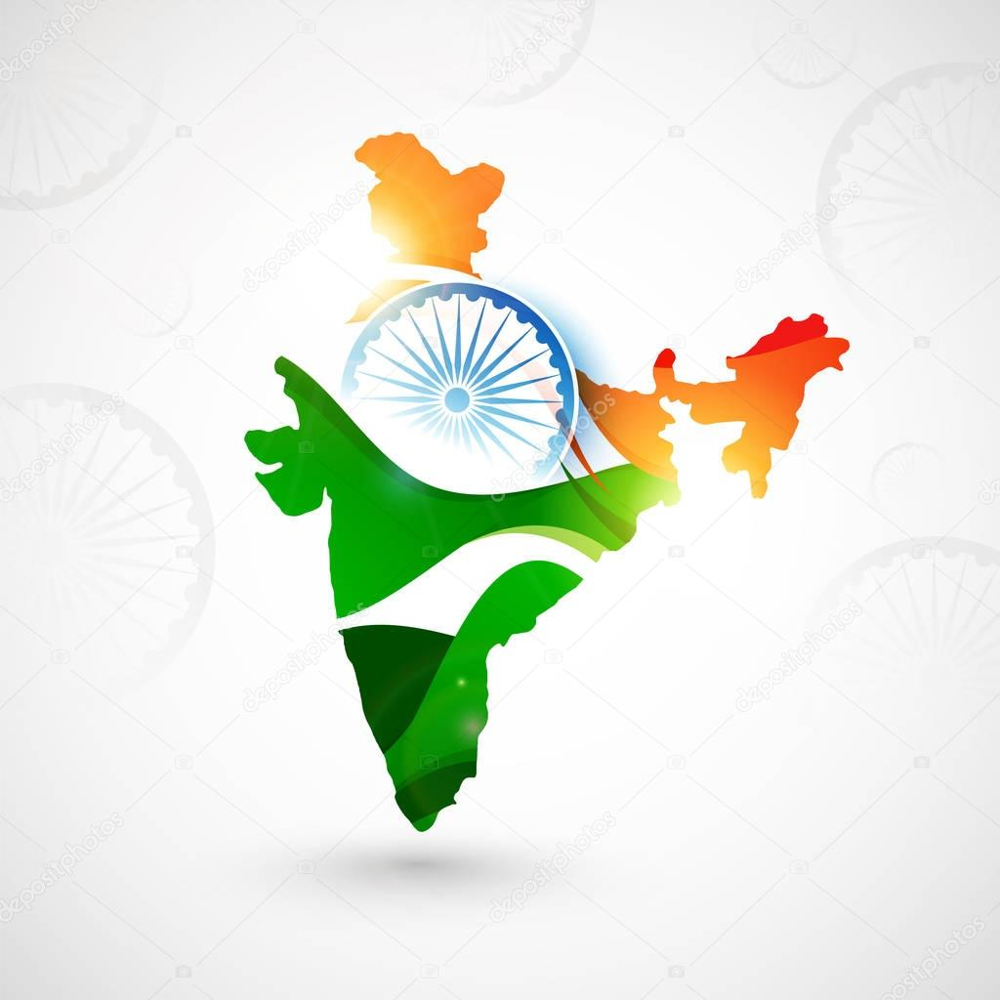
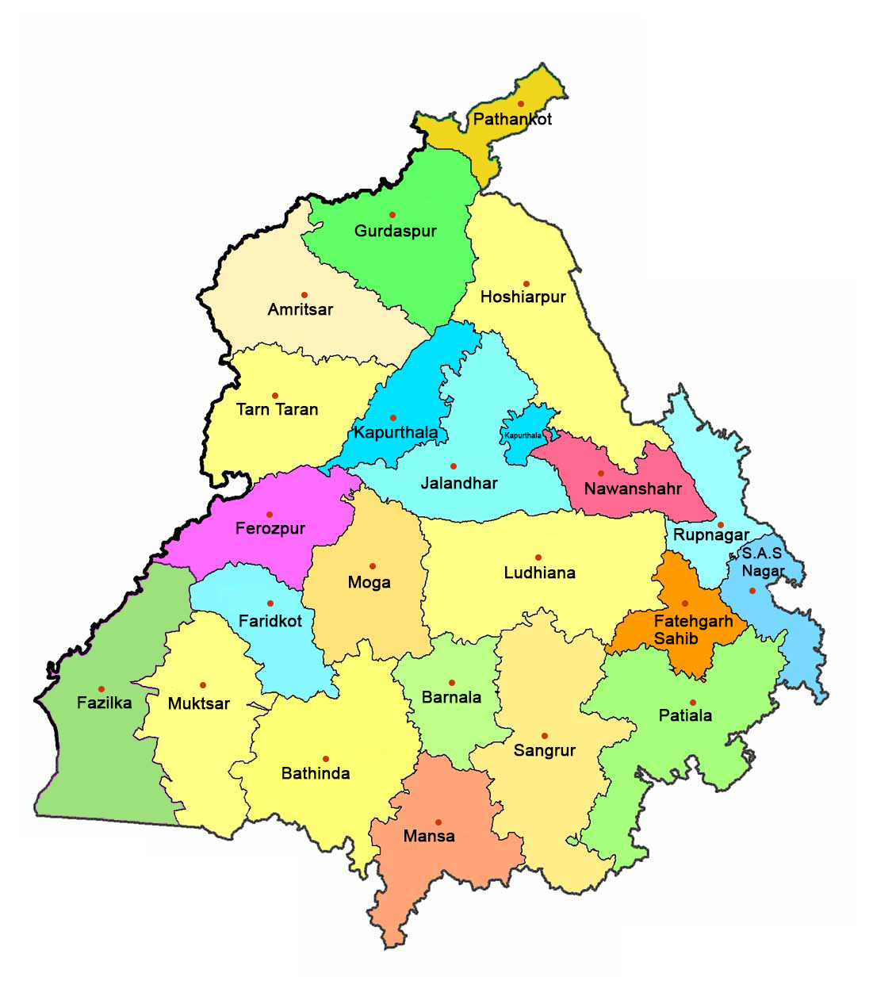

My India
Beautiful Country
India is part of the continent of Asia. Most of India forms a peninsula, which means it is surrounded by water on three sides.
Society throughout India is divided into social ranks, called castes. Caste is determined by birth and there is almost no way to change it.
High castes include priests, landowners, and soldiers. So-called Untouchables have no caste and do the most menial jobs.
India is a very spiritual country. It has no official religion, but more than 80 percent of Indians are Hindu.
About 13 percent are Muslim. Other religions include Buddhism, Sikhism, and Jainism, which all began in India.
On the coast of the Bay of Bengal is the Sundarbans, the world's largest mangrove forest. Here, tigers swim in the same rivers as dolphins,
sea turtles, sharks, and saltwater crocodiles. This unique landscape is constantly under threat as sea levels rise and humans hunt
illegally and clear trees for firewood.

Punjab
My State
Punjab, state of India, located in the northwestern part of the subcontinent. It is bounded by the Indian states of Jammu and Kashmir to the north,
Himachal Pradesh to the northeast, Haryana to the south and southeast, and Rajasthan to the southwest and by the country of Pakistanto the west.
Punjab in its present form came into existence on November 1, 1966, when most of its predominantly Hindi-speaking areas were separated to form the new state of Haryana.
The city of Chandigarh, within the Chandigarh union territory, is the joint capital of Punjab and Haryana.Beginning from best sunsets and cultural spots to historical spots, dances,
delicious foods, and religious sites.
Culture and heritage are unique and magical.Home of the glorious Golden Temple, the iconic city of Amritsar, portrays the heroic character of the Punjab.
Famous Places of Punjab
- Golden Temple
- Rangla Punjab Haveli
- Jallianwala Bagh